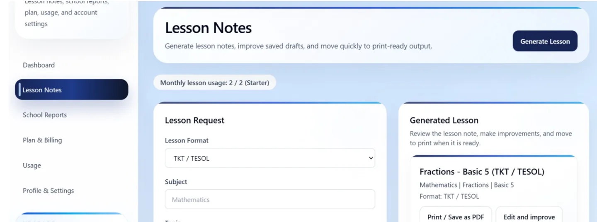

Prepare lesson drafts
Turn a topic, class level, objective and lesson duration into a structured starting draft for teacher review.
School staff development · Nigeria
JENECONK provides practical AI training for teachers, academic leaders and school administrators in Nigeria. Staff learn how to use AI for lesson planning, teaching materials, assessment and administration while protecting learner data and retaining professional judgement.
The scope is adapted to your staff roles, approved tools, available devices and learning goals.
Good training helps staff prepare better drafts, check outputs and decide where AI does not belong.
Direct answer
AI training for teachers is practical professional development that shows school staff how to use approved AI tools for defined teaching and administrative tasks. JENECONK workshops can cover lesson planning, lesson notes, schemes of work, teaching visuals, assessment ideas, report comments and school communication. Each task includes review for curriculum fit, accuracy, privacy, fairness and age appropriateness.
It is designed for schools that want staff to understand both the useful applications and the limits. The workshop should leave teachers with a repeatable way to decide when AI is helpful, what information must stay private and who remains accountable for the final work.
Practical school outcomes
Training can be tailored to the school’s curriculum, staff confidence and approved tools.
Turn a topic, class level, objective and lesson duration into a structured starting draft for teacher review.
Develop examples, activity ideas and visual prompts that suit learner level and school context.
Generate question ideas and marking criteria, then check coverage, difficulty, ambiguity and alignment to taught content.
Structure constructive report comments from verified teacher observations, without allowing AI to invent learner performance.
Practise letters, meeting notes and routine communication while checking tone, facts, names and school policy.
Recognise fabricated references, bias, unsupported claims, privacy risks and content that does not fit learners.
Workshop structure
Duration, sequence and group format are agreed with the school. A tailored workshop may include:
Identify staff roles, priority tasks, approved tools, data that must remain private and who reviews the final work. Agree what the school wants to improve before the session.
Give an AI system context, purpose, constraints and an output format. Check answers against trusted sources, subject knowledge, policy and learner needs.
Use a curriculum topic and class context to draft a lesson outline, examples or teaching resources. Check that objectives, activities and assessment align and suit the learners.
Explore question design, rubrics and comment structures. Teachers verify that questions assess taught material and feedback reflects evidence.
Each participant applies the method to an agreed task and explains the checks made before use. The school can use the work to decide what to pilot next.
Protect learners and teachers
Teachers should not have to guess which tools or data are acceptable. School leaders should identify approved platforms, data boundaries, review owners, assessment limits and an escalation path for mistakes.
JENECONK’s school AI policy template can help leaders organise these decisions.
Scope and fees
JENECONK confirms the recommended format after learning about your priorities and practical constraints.
Fees are quoted in writing after the school’s requirements are understood. Tool licences or other third-party costs are identified before approval.
A connected school pathway
Staff development is more useful when the school has a clear place to apply the new workflow. Edu Suite supports lesson notes, schemes, assessments and reports; the school decides whether it fits its needs.
For leaders, start with the responsible AI adoption guide and AI tools for school administrators.

Questions school leaders ask
Teachers practise responsible AI use for planning, teaching materials, assessment ideas, feedback and administration, with human review and curriculum fit kept central.
Content can be adapted to staff roles, learner ages, school context and approved tools.
Group size depends on devices, facilitator support, time and staff readiness. Details are scoped with the school before booking.
AI can help create drafts. Teachers remain responsible for curriculum alignment, learner data protection, fairness, accuracy and final decisions.
Identify goals, staff group, available devices, approved or prohibited platforms, data-handling expectations and a school contact to coordinate the session.
Duration depends on the school’s goals, staff size and depth of practice. JENECONK confirms schedule and scope in the proposal.
Fees are quoted based on group size, customisation, location, delivery format, assessment and follow-up.
No. Staff development should sit alongside clear school rules for approved tools, learner data, review, assessment boundaries and accountability.
For schools and academic teams
Tell us the staff roles you serve, what you want to improve and your preferred dates.
Prepared by Collins Otomewo Anthony · JENECONK Integrated Global Solutions Ltd · Last updated: 28 November 2026. Workshop content and delivery details are agreed with each school before booking.